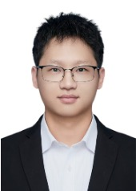
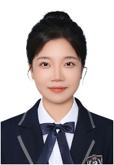
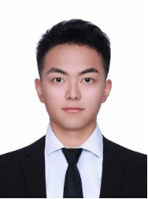
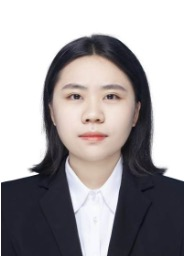

Keyong Sun
Principal Investigator · PhD Supervisor
Suzhou Institute of Systems Medicine
Chinese Academy of Medical Sciences
PhD and postdoctoral research, Tsinghua University.
Joined the institute in August 2025.
SUN LAB / LAB TEAM
Principal Investigator · PhD Supervisor
Suzhou Institute of Systems Medicine
Chinese Academy of Medical Sciences
PhD and postdoctoral research, Tsinghua University.
Joined the institute in August 2025.
OUR TEAM

Postdoctoral Fellow
PhD in Immunology, China Pharmaceutical University

PhD Student
Master’s degree, Xi’an Jiaotong University

Master’s Student
Bachelor’s degree in Biology, Hunan Normal University

Research Assistant
Master’s degree, Chongqing Medical University